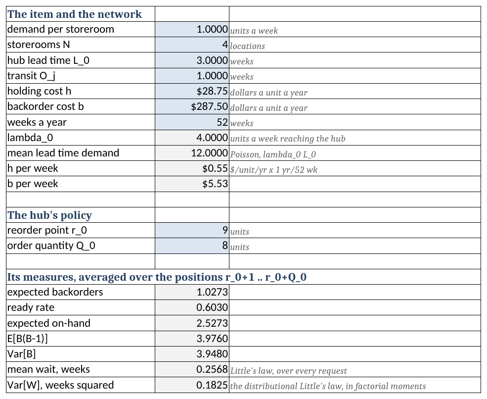
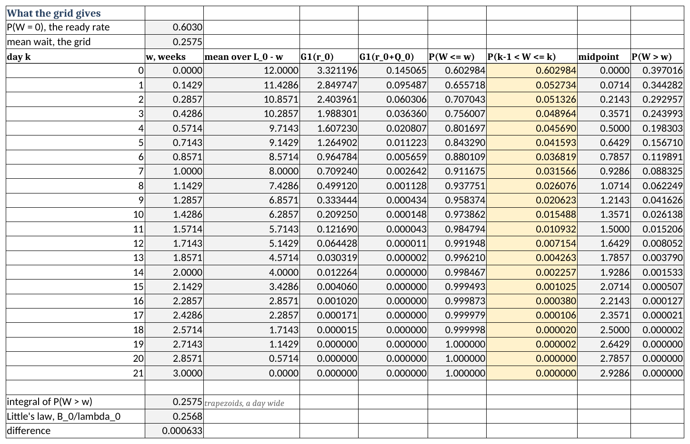
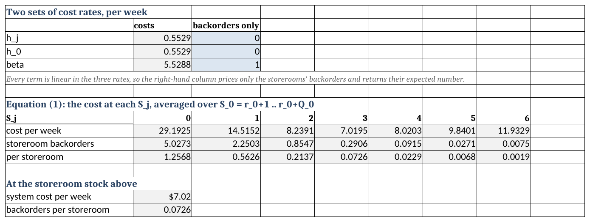
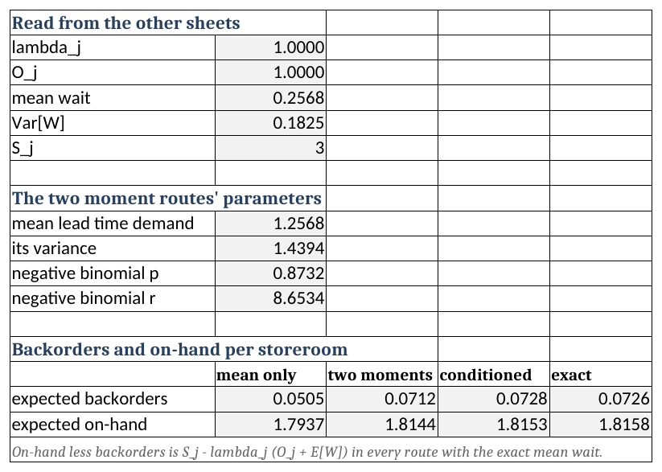
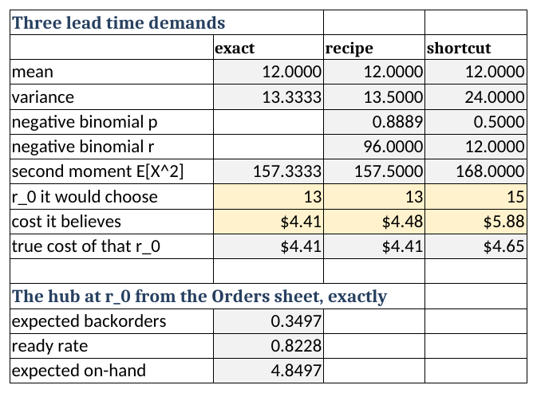
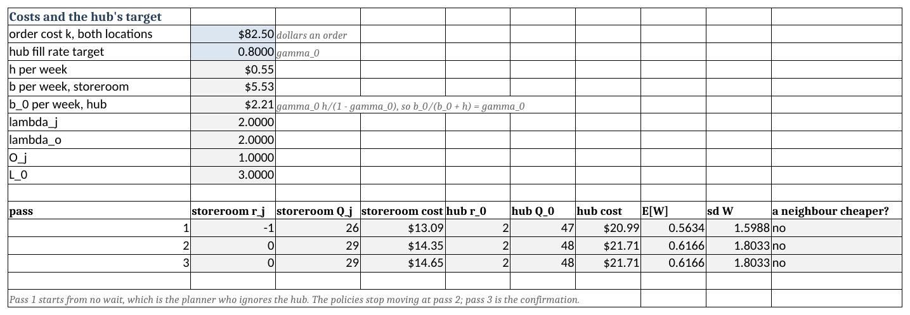

10 Multi-Echelon Systems with Batch Ordering
After reading this chapter you should be able to:
- explain why a location that orders in batches passes up a stream that is not its customers’ demand
- compute a batching hub’s measures when its storerooms order one at a time, and the distribution of the wait it imposes on them
- evaluate a two-level system exactly by Axsäter’s recursion, and price the approximations of a storeroom’s lead time demand against it
- count a batching storeroom’s orders in a window from the Poisson table, both at a random moment and as one of its own orders sees them
- build a hub’s lead time demand when storerooms batch and other demand arrives, exactly and by a two-moment recipe, and say why a common shortcut over-stocks
- handle a random supplier lead time by conditioning on it and averaging
- set both locations’ policies with a two-level iteration, and price its answer against an exact cost
Chapter 9 solved two levels under one-for-one ordering, where every demand at a supported location triggers a request of exactly one unit. That assumption is what made the coupling tractable: the demand a location passes up is its own demand, arrival for arrival.
This chapter removes it. When a location orders in batches of \(Q\), the stream it passes up is no longer its customers’ demand stream. It is lumpier, it is steadier in its timing, and characterizing it is most of the work.
The chapter comes in three parts, and each earns the next. Part I lets only the hub batch. Its storerooms still order one unit at a time, so the hub sees their customers’ demand unchanged, and everything can be computed exactly: the hub’s measures, the wait it imposes, and, by a recursion due to Axsäter (1993), the storerooms’ measures as well. Part II lets the storerooms batch and lets demand from elsewhere reach the hub. The machinery that handles it needs nothing beyond the Poisson table and chapter 8, and wherever Axsäter’s recursion still applies the two agree exactly. Part III chooses both locations’ policies together, by an iteration that solves one location at a time.
One move carries the whole chapter: condition on the position, then average. Section 8.5.1 obtained the measures of an \((r, Q)\) location by averaging base-stock measures over its \(Q\) equally likely positions. The chapter makes that move four more times, and you should expect to recognize it before it is named.
10.1 What Batching Changes
A storeroom that orders one at a time sends its supplier one request for each customer, at the moment the customer arrives. Its supplier therefore sees the storeroom’s customers. A storeroom that orders \(Q_j\) at a time sends one request for every \(Q_j\) customers, and the supplier sees something else: nothing at all for a while, then \(Q_j\) units at once.
Thus, batching changes three things at the hub, and each is a section of this chapter.
- The hub’s demand is no longer the customers’ demand. It arrives in lumps of \(Q_j\), and it arrives more regularly than the customers do, since the storeroom orders once per \(Q_j\) units of demand, nearly on a schedule. Section 10.8 counts those lumps.
- An order waits for its last unit. A hub with two units on its shelf and an order of three ships two and owes one, and the order is not filled until the third arrives. Section 10.10 measures that wait.
- The two policies can no longer be set one after the other. Under one-for-one ordering the depot of Chapter 9 could be solved first and on its own, because its demand contained no storeroom policy. Once the storeroom batches, the hub’s demand depends on \(Q_j\), and the storeroom’s lead time depends on the hub. Section 10.12 handles the circle.
What does not change is the coupling itself. Recall from Section 9.6.2 that a supplier’s backorders become a delay by Little’s law. That move carries over unchanged, and so does the warning attached to it: the average it produces is over every request, including those filled at once.
10.1.1 Where This Leaves Us
The difficulty is in the hub’s demand and in the storeroom’s lead time. Part I sets both aside by letting only the hub batch, so that the chapter’s arithmetic can first be done exactly on a system the reader already knows.
10.2 The Item and the Network
The item is the fuse cutout of Section 8.11, a cheap consumable that a utility stocks at a central hub and at the storerooms its crews draw from. Section 8.11 took the cutout as drawn in job lots. In Parts I and II each customer takes one unit, and the job lots return in Section 10.14, where only the iteration of Part III can handle them. That is a simplification made for the mathematics, and it is stated here so that a reader who remembers the job lots does not think the book contradicted itself.
The running example of Part I has four identical storerooms supplied by one hub.
What is stocked? One item, the fuse cutout, at five locations: the hub and four storerooms.
What is the demand process? Poisson at one unit a week at each storeroom, one unit per customer.
When is inventory reviewed? Continuously, at every location.
What triggers replenishment, and how much? At a storeroom, every customer: the storerooms run base stock \(S_j = 3\) and order one unit at a time. At the hub, its position reaching \(r_0 = 9\), for \(Q_0 = 8\) units.
What happens to unmet demand? It is backordered at both levels. A crew waits at the storeroom; a request waits at the hub, and the hub fills its requests first come, first served, shipping part of an order when it has only part of it.
What costs are incurred, and when? Holding at both levels at \(h = \$28.75\) per unit per year, and a shortage cost at the storerooms of \(b = \$287.50\) per unit per year owed. The hub carries no shortage cost of its own, since a unit short at the hub costs nothing until a crew is short of it.
The chapter works in weeks, so the costs are converted once: \[ h = \frac{\$28.75}{\text{unit} \cdot \text{year}} \times \frac{1 \text{ year}}{52 \text{ weeks}} = \$0.5529 \text{ per unit per week}, \qquad b = \frac{\$287.50}{52} = \$5.5288 \text{ per unit per week}. \]
Notation. Let \(\lambda_j\) represent the demand rate at storeroom \(j\) and \(\lambda_0\) the demand rate at the hub, in units per week. Let \(L_0\) represent the hub’s lead time from its supplier and \(O_j\) the transit time from the hub to storeroom \(j\), both constant and in weeks. Let \((r_0, Q_0)\) and \((r_j, Q_j)\) represent the two policies, a base-stock storeroom being \((S_j - 1, 1)\). Let \(D_0(\ell)\) represent the hub’s demand in a window of \(\ell\) weeks. Let \(W\) represent the time a request waits at the hub before it ships, and \(\bar{B}_0\), \(\overline{\mathit{RR}}_0\) and \(\bar{I}_0\) the hub’s expected backorders, ready rate and on-hand stock. In the running example \(\lambda_j = 1\), \(\lambda_0 = 4\), \(L_0 = 3\) and \(O_j = 1\). The values \(Q_0 = 8\) and \(S_j = 3\) are stated rather than chosen here; Section 10.6 shows that, given \(Q_0 = 8\), they and \(r_0 = 9\) are the exact optimum.
10.2.1 Where This Leaves Us
Before any formula, Section 10.3 runs a hub and one storeroom by hand, so that every quantity the chapter computes has been seen on a posted row first.
10.3 Working Two Locations by Hand
The ledger follows the convention of Example 8.1 and Section 9.5.2 exactly: one row per event, at the week it occurs, with the state recorded after the event is posted. Two events can fall in the same week, and then the order matters, so it is fixed once: the hub’s receipts first, then the storeroom’s, then demands in the order they arrive.
You should be able to perform by hand the bookkeeping that the workbook and the code will otherwise perform for you. That is the reason the ledger comes first.
10.3.1 The System and the Rules
The system is one storeroom and its hub, with small numbers so that events are few. The hub runs \((r_0, Q_0) = (1, 4)\) with \(L_0 = 3\) weeks and starts with 5 units on its shelf. The storeroom runs base stock \(S_j = 2\), is \(O_j = 1\) week from the hub, and starts with 2 on its shelf. Failures occur in weeks 1, 3, 6, 8, 9, 10 and 14, and a storm in week 8 takes out three cutouts, so week 8 has three failures.
The columns. \(I_j\), \(B_j\) and \(\mathit{IP}_j\) are the storeroom’s on-hand, backorders and position, and “in transit” counts units shipped by the hub and not yet received. \(I_0\), \(B_0\), “on order” and \(\mathit{IP}_0\) are the same four at the hub.
The check to run on every row. At the hub, \[ \mathit{IP}_0 = I_0 + \text{on order} - B_0 , \tag{10.1}\] and at the storeroom its position is on-hand less backorders plus what is in transit and what the hub still owes it. Compute the positions both ways on every row, and stop when they disagree.
10.3.2 The Ledger
Week 1. A cutout fails. The storeroom issues one of its two, leaving one, and sends a request to the hub. The hub has five, ships one, and is left with four. Its position falls from 5 to 4, which is above \(r_0 = 1\), so it orders nothing.
Week 2. The shipment arrives and the storeroom is back to two.
Weeks 3 and 4, and 6 and 7. The same thing twice more: a failure, a request, a shipment that arrives a week later. The hub’s shelf falls to 3 and then to 2.
The table has been updated as follows.
| Week | Event | \(I_j\) | \(B_j\) | \(\mathit{IP}_j\) | In transit | \(I_0\) | \(B_0\) | On order | \(\mathit{IP}_0\) |
|---|---|---|---|---|---|---|---|---|---|
| 1 | failure, request to hub | 1 | 0 | 2 | 1 | 4 | 0 | 0 | 4 |
| 2 | storeroom receives 1 | 2 | 0 | 2 | 0 | 4 | 0 | 0 | 4 |
| 3 | failure, request to hub | 1 | 0 | 2 | 1 | 3 | 0 | 0 | 3 |
| 4 | storeroom receives 1 | 2 | 0 | 2 | 0 | 3 | 0 | 0 | 3 |
| 6 | failure, request to hub | 1 | 0 | 2 | 1 | 2 | 0 | 0 | 2 |
| 7 | storeroom receives 1 | 2 | 0 | 2 | 0 | 2 | 0 | 0 | 2 |
Notice what has not happened. Six weeks in, nobody has waited, and the hub has not ordered. It has been spending its opening stock one unit at a time, and its position has fallen from 5 to 2, one step above its reorder point.
Week 8, the storm. Three failures are reported, and they are posted one at a time.
The first takes the storeroom from two to one and sends a request. The hub ships its second-to-last unit, and its position falls to \(1 = r_0\). The hub orders 4, due in week 11, and its position rises to 5.
The second takes the storeroom’s last unit. The hub ships its last, and its position falls to 4.
The third finds the storeroom’s shelf empty. A crew waits, and \(B_j = 1\). Its request reaches a hub with nothing on the shelf, so the hub records a backorder, and \(B_0 = 1\). The hub’s position falls to 3.
The table has been updated as follows.
| Week | Event | \(I_j\) | \(B_j\) | \(\mathit{IP}_j\) | In transit | \(I_0\) | \(B_0\) | On order | \(\mathit{IP}_0\) |
|---|---|---|---|---|---|---|---|---|---|
| 1 | failure, request to hub | 1 | 0 | 2 | 1 | 4 | 0 | 0 | 4 |
| 2 | storeroom receives 1 | 2 | 0 | 2 | 0 | 4 | 0 | 0 | 4 |
| 3 | failure, request to hub | 1 | 0 | 2 | 1 | 3 | 0 | 0 | 3 |
| 4 | storeroom receives 1 | 2 | 0 | 2 | 0 | 3 | 0 | 0 | 3 |
| 6 | failure, request to hub | 1 | 0 | 2 | 1 | 2 | 0 | 0 | 2 |
| 7 | storeroom receives 1 | 2 | 0 | 2 | 0 | 2 | 0 | 0 | 2 |
| 8 | failure, request to hub, hub orders 4 | 1 | 0 | 2 | 1 | 1 | 0 | 4 | 5 |
| 8 | failure, request to hub | 0 | 0 | 2 | 2 | 0 | 0 | 4 | 4 |
| 8 | failure, request backordered | 0 | 1 | 2 | 2 | 0 | 1 | 4 | 3 |
Check the last row both ways. At the hub, \(0 + 4 - 1 = 3\). At the storeroom, on-hand less backorders is \(-1\), two units are in transit and the hub owes one, so the position is \(-1 + 2 + 1 = 2\). Both hold.
Week 9. The two units shipped in week 8 arrive. By the posting rule the receipt comes first: one goes straight to the waiting crew, whose wait was one week, and one goes on the shelf. Then a failure takes it, and its request finds the hub empty again. \(B_0 = 2\).
Week 10. A failure finds the shelf empty, so a second crew waits. Its request is the hub’s third backorder, and it carries the hub’s position from 2 to 1, its reorder point again. The hub orders another 4, due in week 13, while the first is still on its way. On order now reads 8, the first time the reader has seen two hub orders outstanding.
Week 11, the payoff row. The hub’s first order arrives. It owes three requests, from weeks 8, 9 and 10, and it fills them in that order. One delivery clears three waiting requests at once, and the fourth unit goes on the hub’s shelf. The three shipments leave together and arrive together in week 12.
The table has been updated as follows.
| Week | Event | \(I_j\) | \(B_j\) | \(\mathit{IP}_j\) | In transit | \(I_0\) | \(B_0\) | On order | \(\mathit{IP}_0\) |
|---|---|---|---|---|---|---|---|---|---|
| 1 | failure, request to hub | 1 | 0 | 2 | 1 | 4 | 0 | 0 | 4 |
| 2 | storeroom receives 1 | 2 | 0 | 2 | 0 | 4 | 0 | 0 | 4 |
| 3 | failure, request to hub | 1 | 0 | 2 | 1 | 3 | 0 | 0 | 3 |
| 4 | storeroom receives 1 | 2 | 0 | 2 | 0 | 3 | 0 | 0 | 3 |
| 6 | failure, request to hub | 1 | 0 | 2 | 1 | 2 | 0 | 0 | 2 |
| 7 | storeroom receives 1 | 2 | 0 | 2 | 0 | 2 | 0 | 0 | 2 |
| 8 | failure, request to hub, hub orders 4 | 1 | 0 | 2 | 1 | 1 | 0 | 4 | 5 |
| 8 | failure, request to hub | 0 | 0 | 2 | 2 | 0 | 0 | 4 | 4 |
| 8 | failure, request backordered | 0 | 1 | 2 | 2 | 0 | 1 | 4 | 3 |
| 9 | storeroom receives 2, serves the waiting crew | 1 | 0 | 2 | 0 | 0 | 1 | 4 | 3 |
| 9 | failure, request backordered | 0 | 0 | 2 | 0 | 0 | 2 | 4 | 2 |
| 10 | failure backordered, request backordered, hub orders 4 | 0 | 1 | 2 | 0 | 0 | 3 | 8 | 5 |
| 11 | hub receives 4, fills three waiting requests | 0 | 1 | 2 | 3 | 1 | 0 | 4 | 5 |
Week 12. The three units arrive at the storeroom. One goes to the crew waiting since week 10, who waited two weeks, and two go on the shelf.
Week 13. The hub’s second order arrives. Nothing is owed, so all four go on its shelf, which now holds five.
Weeks 14 and 15. One more failure, filled at once, and its replacement arrives a week later. The system is quiet again.
The table has been updated as follows, and this is the completed ledger.
| Week | Event | \(I_j\) | \(B_j\) | \(\mathit{IP}_j\) | In transit | \(I_0\) | \(B_0\) | On order | \(\mathit{IP}_0\) |
|---|---|---|---|---|---|---|---|---|---|
| 1 | failure, request to hub | 1 | 0 | 2 | 1 | 4 | 0 | 0 | 4 |
| 2 | storeroom receives 1 | 2 | 0 | 2 | 0 | 4 | 0 | 0 | 4 |
| 3 | failure, request to hub | 1 | 0 | 2 | 1 | 3 | 0 | 0 | 3 |
| 4 | storeroom receives 1 | 2 | 0 | 2 | 0 | 3 | 0 | 0 | 3 |
| 6 | failure, request to hub | 1 | 0 | 2 | 1 | 2 | 0 | 0 | 2 |
| 7 | storeroom receives 1 | 2 | 0 | 2 | 0 | 2 | 0 | 0 | 2 |
| 8 | failure, request to hub, hub orders 4 | 1 | 0 | 2 | 1 | 1 | 0 | 4 | 5 |
| 8 | failure, request to hub | 0 | 0 | 2 | 2 | 0 | 0 | 4 | 4 |
| 8 | failure, request backordered | 0 | 1 | 2 | 2 | 0 | 1 | 4 | 3 |
| 9 | storeroom receives 2, serves the waiting crew | 1 | 0 | 2 | 0 | 0 | 1 | 4 | 3 |
| 9 | failure, request backordered | 0 | 0 | 2 | 0 | 0 | 2 | 4 | 2 |
| 10 | failure backordered, request backordered, hub orders 4 | 0 | 1 | 2 | 0 | 0 | 3 | 8 | 5 |
| 11 | hub receives 4, fills three waiting requests | 0 | 1 | 2 | 3 | 1 | 0 | 4 | 5 |
| 12 | storeroom receives 3, serves the waiting crew | 2 | 0 | 2 | 0 | 1 | 0 | 4 | 5 |
| 13 | hub receives 4 | 2 | 0 | 2 | 0 | 5 | 0 | 0 | 5 |
| 14 | failure, request to hub | 1 | 0 | 2 | 1 | 4 | 0 | 0 | 4 |
| 15 | storeroom receives 1 | 2 | 0 | 2 | 0 | 4 | 0 | 0 | 4 |
10.3.3 What the Ledger Establishes
The mean wait, two ways. Follow the nine requests. Six waited nothing, and those from weeks 8, 9 and 10 waited 3, 2 and 1 weeks, a total of 6 weeks, so the mean is \(6/9 = 0.667\) weeks. Now weight the hub’s backorder level by how long it was held: 1 from week 8 to 9, 2 from 9 to 10, 3 from 10 to 11, which is \(1 + 2 + 3 = 6\) unit-weeks, and divide by the nine requests. The same 0.667. That is Little’s law, as it was in Section 9.5.3, and the two agree because they count the same area along different axes.
The three waits of week 11 are one event. Three requests waited 3, 2 and 1 weeks, and all three ended at the same delivery. They are not three independent draws from a distribution of waits; they are one delay seen three times. That matters in Section 10.6, where we shall find that for a base-stock storeroom it turns out not to matter at all, and the reason why.
The crews waited because the hub did. The storeroom’s stock never changed. Its two shortages were manufactured at the hub, by the storm draining a hub that had been spending its opening stock one unit at a time.
A request that arrives with the hub’s position high waits nothing. In weeks 1 to 7 the hub’s position was 4, 3 or 2, and every request shipped at once. The chance a request waits depends on where the hub’s position happens to sit when it arrives, and Section 10.4 turns that observation into the hub’s measures.
10.3.4 Where This Leaves Us
The ledger measured one wait by following requests. Section 10.4 computes the hub’s measures for the running example, and Section 10.5 then gives the whole distribution of the wait, not only its mean.
10.4 The Hub Is a Chapter 8 Problem
When the storerooms order one unit at a time, each customer demand becomes one request at the hub the moment it occurs. The requests from four storerooms, each a Poisson stream, merge into a Poisson stream at \(\lambda_0 = \sum_j \lambda_j\). Thus, the hub is exactly the location of Section 8.5: one location running \((r_0, Q_0)\) against Poisson demand with a constant lead time. Its lead time demand \(D_0(L_0)\) is Poisson with mean \(\lambda_0 L_0\), and Equation 8.18, Equation 8.19 and Equation 8.20 give its measures with no change at all.
This is worth dwelling on for a moment, because it is where the chapter’s one move comes from. Section 8.5.1 established that the position of an \((r, Q)\) location is equally likely to sit at each of \(r+1, \dots, r+Q\) and is independent of the demand that follows. Its measures are therefore base-stock measures averaged over those \(Q\) values. Condition on the position, then average: that is how chapter 8 built \(\bar{B}(r, Q)\) from \(G^{1}\), and it is the move this chapter keeps making.
Example 10.1 (The hub of the running example) The system is the one of Section 10.2, so the modeling questions have the answers given there.
The question. How often does the hub have stock, how much does it owe on average, and how much does it hold?
Notation. Let \(D_0(L_0)\) represent the hub’s demand over its three-week lead time, Poisson with mean \(\theta_0 = \lambda_0 L_0 = 4 \times 3 = 12\) units. Let \(G^{1}\) and \(G^{2}\) represent its first and second order loss functions, read from Table D.4 and Table D.5 at mean 12.
The computation. With \((r_0, Q_0) = (9, 8)\), Equation 8.18 gives \[ \bar{B}_0 = \frac{G^{2}(9) - G^{2}(17)}{8} = \frac{8.3910 - 0.1726}{8} = 1.0273 \text{ units}, \] Equation 8.19 gives \[ \overline{\mathit{RR}}_0 = 1 - \frac{G^{1}(9) - G^{1}(17)}{8} = 1 - \frac{3.3212 - 0.1451}{8} = 0.6030 , \] and Equation 8.20 gives \(\bar{I}_0 = (8 + 1)/2 + 9 - 12 + 1.0273 = 2.5273\) units.
The check. On-hand less backorders must be the average position less the mean lead time demand: \(2.5273 - 1.0273 = 1.5000\), and \(9 + 4.5 - 12 = 1.5\). That check is worth performing every time, because it catches most errors in reading a loss table at the wrong index.
Interpretation. The hub has stock only 60% of the time and holds about two and a half cutouts on average. That looks thin for a central warehouse, and it is deliberate. The hub carries no shortage cost of its own; its shortages matter only through the storerooms, and each storeroom holds three units of its own against them. Section 10.6 shows that this pair of policies is the exact optimum for \(Q_0 = 8\).
Validation against a closed form, and its limit. At \(Q_0 = 1\) the hub would run base stock, and Equation 8.18 would collapse to Equation 8.10 at \(S_0 = r_0 + 1\): chapter 9’s depot. The average over eight positions here is eight such depots, one for each place the position can sit. What has to break for this section to stop applying is the Poisson stream at the hub. The moment a storeroom orders more than one unit at a time, its requests are no longer its customers, and the hub is no longer a chapter 8 location.
10.4.1 Where This Leaves Us
The hub is solved. What it owes the storerooms is not yet a wait, and a storeroom needs a wait, since the wait is part of its lead time.
10.5 The Delay the Hub Imposes
10.5.1 The Mean
Recall from Section 9.6.2 that Little’s law turns a supplier’s backorders into a delay. Nothing in the argument used one-for-one ordering at the supplier, so it applies to the hub as it stands: \[ \bar{W} = \frac{\bar{B}_0}{\lambda_0} . \tag{10.2}\] For the running example that is \(1.0273/4 = 0.2568\) weeks, or \(0.2568 \times 7 = 1.80\) days. Chapter 9’s warning callout carries over word for word: this is the average over every request, including the 60% filled at once.
10.5.2 The Distribution
A storeroom’s lead time is transit plus the wait, and a random lead time needs more than its mean. The distribution of the wait comes from one argument, the lead-time shift of van der Wal (1993).
Suppose the hub’s supplier were \(w\) weeks faster. A request that waits at most \(w\) weeks in the real system is exactly a request that would be filled at once in that faster one. And a request is filled at once when the hub’s position, one lead time before it arrives, covered all the demand since, the request’s own unit included. In the faster system that lead time is \(L_0 - w\). The position is uniform on \(r_0 + 1, \dots, r_0 + Q_0\) and independent of the demand after it, so \[ P(W \le w) = \frac{1}{Q_0}\sum_{u=r_0+1}^{r_0+Q_0} P\big(D_0(L_0 - w) \le u - 1\big), \qquad 0 \le w < L_0 , \tag{10.3}\] and \(P(W \le L_0) = 1\).
Read Equation 10.3 against Equation 8.19 and something useful appears. At \(w = 0\) it is the ready rate. At any other \(w\) it is the ready rate the hub would have with a lead time \(w\) shorter. That is the lead-time shift written as arithmetic, and it is how the workbook computes the whole distribution, one formula to a row.
The argument needs three things, and the text states them because each can fail. Requests are filled first come, first served. Deliveries from the supplier do not overtake one another. And \(r_0 \ge 0\): with a negative reorder point a request can wait for an order that is placed after it arrives, and the shift no longer holds.
Example 10.2 (The wait at the running example’s hub) The computation. At \(w = 0\) the window is the full lead time, and \(D_0(3)\) is Poisson with mean 12. The positions are \(u = 10, \dots, 17\), so the entries of Table D.3 needed are \(G(9)\) through \(G(16)\): \[ P(W = 0) = \tfrac{1}{8}(0.2424 + 0.3472 + 0.4616 + 0.5760 + 0.6815 + 0.7720 + 0.8444 + 0.8987) = 0.6030 . \] At \(w = 1\) the mean is \(4 \times 2 = 8\), and the same eight entries of the mean 8 column average to 0.9117. At \(w = 2\) the mean is 4, and they average to 0.9985.
The check. \(P(W = 0)\) is the ready rate of Example 10.1, 0.6030, as it must be. A second check integrates the tail: the area under \(P(W > w)\) from 0 to \(L_0\) is the mean wait, and a day-wide grid in the workbook gives 0.2575 against the 0.2568 of Equation 10.2.
Interpretation. Six requests in ten ship at once; nine in ten within a week; almost none waits past two weeks. The mean of 1.8 days hides that shape. It is the average of a wait that is usually zero and occasionally a week or more.
10.5.3 The Second Moment
Little’s law has a distributional form, due to Bertsimas and Nakazato (1995), that relates factorial moments when arrivals are Poisson and service is first come, first served: \(E[B_0(B_0 - 1)] = \lambda_0^{2} E[W^{2}]\). Subtracting the square of the mean, \[ \mathit{Var}[W] = \frac{\mathit{Var}[B_0] - \bar{B}_0}{\lambda_0^{2}} , \tag{10.4}\] and \(\mathit{Var}[B_0]\) is Equation 8.21, which chapter 8 built for exactly this use. Notice the subtraction. The variance of the wait is not the variance of the backorder level scaled; it is that variance less the mean. For the running example Equation 10.4 gives \(0.1825\) weeks squared, and integrating \(2wP(W > w)\) from Equation 10.3 gives the same figure to nine decimals. Thus, the two routes check each other.
10.5.4 Where This Leaves Us
The wait is known exactly, its whole distribution and not only its mean. Section 10.6 turns it into the storeroom’s measures, three ways, and measures the three against an exact answer.
10.6 Exact Storeroom Measures
10.6.1 The One-for-One Recursion
Begin with both levels ordering one unit at a time, the setting of Chapter 9. Axsäter (1990) gave a recursion for its exact cost, and Axsäter (1993) summarized it in an appendix that extends it to negative positions. Let \(C(S_0, S_j)\) represent the system’s cost per week when the hub’s position is held at \(S_0\) and each storeroom’s at \(S_j\), counting holding at both levels and shortage at the storerooms.
The recursion rests on tracking a single unit. A unit the hub orders is used to fill the \(S_0\)th hub demand after the order, and at the storeroom it fills the \(S_j\)th demand after that storeroom’s order. Its cost depends on when those demands arrive, and Poisson demand makes that computable. Let \(\pi^{S_j}\) represent the cost per unit at a storeroom whose supplier never runs out; it is chapter 8’s base-stock cost per unit at lead time \(O_j\). Let \(\Pi^{S_j}(S_0)\) represent the storeroom’s cost per unit when the hub’s position is \(S_0\), and \(\gamma(S_0)\) the hub’s holding cost per unit. Then \(C(S_0, S_j) = \lambda_0\big(\Pi^{S_j}(S_0) + \gamma(S_0)\big)\), and \(\Pi\) satisfies, for \(S_0 > 0\), \[
\Pi^{S_j}(S_0 - 1) = \frac{\lambda_j}{\lambda_0}\Pi^{S_j - 1}(S_0)
+ \frac{\lambda_0 - \lambda_j}{\lambda_0}\Pi^{S_j}(S_0)
+ \frac{\lambda_j}{\lambda_0}\big(1 - P(D_0(L_0) \ge S_0)\big)\big(\pi^{S_j} - \pi^{S_j - 1}\big),
\tag{10.5}\] started from \(\Pi^{S_j}(S_0) = \pi^{S_j}\) at a hub position so high the hub never runs out, and from closed forms at \(S_j \le 0\). The chapter does not derive Equation 10.5; Axsäter (1990) does, and the interested reader should refer to it. What matters here is that it is exact and that it runs down a column, which is what the workbook’s Exact sheet does.
The costs give the stock levels as well. Every term of the recursion is linear in the three cost rates. Thus, run it with the storerooms’ shortage cost set to one and both holding costs to zero, and the “cost” it returns is the storerooms’ expected backorders. The same trick returns either location’s expected on-hand.
10.6.2 The Hub Batches
Now let the hub order \(Q_0\) while the storerooms stay one for one. A hub order of \(Q_0\) is \(Q_0\) units, and the \(k\)th of them fills the \((r_0 + k)\)th hub demand after the order, exactly as if the hub ran base stock at \(S_0 = r_0 + k\). Averaging over the units of a batch is averaging over the hub’s positions, and Axsäter (1993)’s equation (1) is \[ C = \frac{1}{Q_0}\sum_{S_0 = r_0+1}^{r_0+Q_0} C(S_0, S_j) . \tag{10.6}\] It is the chapter’s move a second time: condition on the hub’s position, then average.
Example 10.3 (Exact measures for the running example) The computation. With \(S_j = 3\), the one-for-one costs at the eight hub positions \(S_0 = 10, \dots, 17\) are 7.2105, 6.7516, 6.5493, 6.5587, 6.7352, 7.0373, 7.4296 and 7.8837 dollars a week, and their average is \(56.1559/8 = \$7.0195\) a week. Run with the backorder-only rates, the same recursion gives 0.2906 backorders across the four storerooms, 0.0726 at each.
The check. The hub’s expected on-hand by the recursion, 2.5273, is the \(\bar{I}_0\) of Example 10.1 computed an entirely different way.
Interpretation. Searching every \(r_0\) from \(-4\) to 16 and every \(S_j\) from 0 to 6 with \(Q_0 = 8\) finds \((9, 3)\) the cheapest, which is why the running example was set there. Each storeroom owes its crews 0.07 of a cutout on average, which at one failure a week is about one crew-week of waiting in fourteen weeks.
10.6.3 Three Routes to a Storeroom’s Lead Time Demand
The storeroom’s lead time is \(O_j + W\), and chapter 8 already handles a random lead time. There are three ways to feed it.
- The mean wait only. Treat the lead time as \(O_j + \bar{W}\), so the storeroom’s lead time demand is Poisson with mean \(\lambda_j(O_j + \bar{W})\). This is METRIC’s move, Section 9.7.
- Two moments. Fit a negative binomial to the mean \(\lambda_j(O_j + \bar{W})\) and the variance \(\lambda_j(O_j + \bar{W}) + \lambda_j^{2}\mathit{Var}[W]\), case 3 of Table 8.3. This is VARI-METRIC’s move, Section 9.8.
- Conditioned on the wait. For each value \(w\) the wait can take, the lead time demand is Poisson with mean \(\lambda_j(O_j + w)\); average those over the wait’s distribution. This is the chapter’s move a third time.
Table 10.2 prices the three against the exact answer of Example 10.3.
| Route | Backorders per storeroom | Against exact |
|---|---|---|
| Exact, Equation 10.6 | 0.0726 | |
| Conditioned on the wait | 0.0726 | exact |
| Two moments | 0.0712 | 2% low |
| The mean wait only | 0.0505 | 30% low |
Conditioning on the wait is exact here, and the reason is worth stating. With first-come-first-served filling and \(r_0 \ge 0\), the wait a request suffers is fixed by what happened before it arrived: the hub’s position, its orders outstanding, and the queue ahead of the request. The storeroom’s customers after the request are independent of all of that. So each unit’s cost is the cost at lead time \(O_j + w\), averaged over the wait, which is what route 3 computes. Notice what that says about the linked waits of Table 10.1. They are real, but for a base-stock storeroom they do not matter; what matters is that each unit’s wait is independent of the demand it will meet.
Read the other two rows the way Section 9.8 read them. Little’s law gets the mean right, and the mean alone understates the storeroom’s backorders by 30%, because a wait that is usually zero and occasionally long hurts more than a steady wait of the same mean. Carrying the variance recovers nearly all of it.
10.6.4 Where This Leaves Us
With one-for-one storerooms everything is exact, and the chapter’s own route agrees with Axsäter’s. Section 10.7 lets the storerooms batch, which is where Axsäter’s recursion does its real work.
10.7 When the Storerooms Batch Too
10.7.1 One Storeroom
Let a single storeroom run \((r_j, Q_j)\), and let the hub order \(Q_w\) storeroom batches at a time with a reorder point of \(R_w\) batches. Axsäter (1993) counts the hub in batches, and so, where his results are used, does this section: \(Q_0 = Q_w Q_j\) units and \(r_0 = R_w Q_j\).
A hub order is \(Q_w\) sub-batches of \(Q_j\) units. The storeroom placed the order that triggered the hub’s, so its position was just reset to \(r_j + Q_j\), and its next orders come after exactly \(Q_j\), \(2Q_j\), … further demands. Thus the \(i\)th sub-batch is released against system demand \(iQ_j\), and its units fill the storeroom’s \((r_j + 1)\)th to \((r_j + Q_j)\)th demands. Averaging, \[ C = \frac{1}{Q_w Q_j}\sum_{i=R_w+1}^{R_w+Q_w}\ \sum_{k=r_j+1}^{r_j+Q_j} C(iQ_j, k) . \tag{10.7}\]
Example 10.4 (One batching storeroom behind the hub) A storeroom whose crews draw two cutouts a week orders \(Q_j = 3\) at a time, a week from a hub that orders \(Q_w = 2\) batches, six units, with a three-week lead time. Costs are the running example’s.
The computation. At \((R_w, r_j) = (0, 6)\) the double sum needs the hub positions \(iQ_j = 3\) and 6 and the storeroom positions \(k = 7, 8, 9\). The six one-for-one costs are 3.6962, 3.1290 and 3.0011 at \(S_0 = 3\), and 3.1694, 3.5117 and 3.9591 at \(S_0 = 6\), so \[ C = \frac{20.4665}{2 \times 3} = \$3.4111 \text{ a week}. \]
Interpretation. That is the exact optimum, and it holds almost nothing at the hub: \(R_w = 0\) reorders when the hub’s position reaches zero, and the recursion gives the hub 0.52 cutouts on hand on average against 4.13 at the storeroom. With one storeroom the hub is little more than a pass-through, and stock is worth more a week closer to the crews. Raising the hub’s reorder point to one batch moves 1.5 units to the hub, the best storeroom policy falls to \(r_j = 3\), and the cost rises to $3.5354, 3.6% more.
10.7.2 Several Storerooms
With \(N\) identical storerooms the \(i\)th sub-batch is no longer released at a fixed system demand. Which demand triggers the next storeroom order depends on where the other storerooms’ positions sit. Axsäter (1993) lets \(p_{i,j}\) represent the probability that the \(i\)th system demand after a hub order triggers the \(j\)th storeroom order, and his equation (6) replaces the fixed \(iQ_j\) of Equation 10.7 with an average over \(p_{i,j}\).
The idea behind \(p_{i,j}\) is the chapter’s move a third time. The storeroom that triggered the hub’s order has just reset its position. The other \(N - 1\) have positions equally likely to sit anywhere in their ranges, and a storeroom whose position is uniform on \(Q_j\) values orders its \(j\)th time after \(i\) demands with probability \(k/Q_j\) or \(1 - k/Q_j\) for the appropriate \(k\): that is his equation (7). Splitting the system’s demands binomially among the storerooms and convolving gives the rest. The recursion is in the software; the chapter gives its structure, not its algebra.
Axsäter (1993) also offers three approximations. The first releases the \(i\)th sub-batch at system demand \(iQ_j\), as if there were one storeroom; the second lets each demand trigger an order with probability \(1/Q_j\), independently; the third weights them by \(1/N\) and \((N - 1)/N\). On the 32 test problems of Svoronos and Zipkin (1988) he reports all three close to exact, the third closest. For example, on his problem 4 the exact cost is 17.07 and the three approximations give 15.92, 17.33 and 16.98.
10.7.3 Where Exactness Ends
| Case | Status | Source |
|---|---|---|
| Hub batches, storerooms one for one, Poisson | Exact | Axsäter (1993), equation (1) |
| Both batch, one storeroom | Exact | Axsäter (1993), equation (2) |
| Both batch, identical storerooms, Poisson | Exact | Axsäter (1993), equation (6) |
| Both batch, two storerooms that differ | Exact | Axsäter (1998) |
| Both batch, compound Poisson demand | Exact | Axsäter (2000) |
| The hub’s demand as a renewal stream of batches | Approximate | Deuermeyer and Schwarz (1981), Svoronos and Zipkin (1988) |
Table 10.3 is the boundary as the literature draws it. Notice the footnote to every exact row: no demand at the hub except the storerooms’, and no random lead time. Those two are exactly what a real hub has, and they are the subject of Part II.
10.7.4 Where This Leaves Us
Axsäter’s recursion is the chapter’s yardstick. Part II builds a route that reaches past the boundary, and wherever the two overlap they agree exactly, which is how the reader will know the route is right.
10.8 Orders in a Window
Let the storeroom order \(Q_j\) at a time. The hub no longer sees its customers. It sees one order of \(Q_j\) each time the customers carry the storeroom’s position down through \(r_j\), and the question this section answers is how many such orders fall in a window of time.
The storeroom’s orders are its customers’ demand, counted in whole batches. Let \(u\) represent how far the storeroom’s position sits above \(r_j\) when a window opens, so \(u\) is one of \(1, \dots, Q_j\). Let \(D\) represent the customers’ demand in the window and \(N\) the number of orders the storeroom places in it. The first order comes after \(u\) units of demand, and each later one after \(Q_j\) more, so \[ N \ge n \iff D \ge u + (n - 1)Q_j . \] Recall from Section 8.5.1 that \(u\) is equally likely to take each of its \(Q_j\) values. Averaging over them, which is the chapter’s move again, \[ P(N \ge n) = \frac{1}{Q_j}\sum_{y=(n-1)Q_j+1}^{nQ_j} P(D \ge y), \qquad n \ge 1 . \tag{10.8}\] In other words, the chance of at least \(n\) orders is the average of \(Q_j\) consecutive entries of the demand’s tail. With Poisson customers that is chapter 8’s table and nothing else.
Two checks come with Equation 10.8, and both should be run. At \(Q_j = 1\) it is \(P(D \ge n)\): the hub sees the customers, the case of Part I. And \(Q_j E[N] = E[D]\): on average the storeroom passes up exactly its customers’ demand. Notice what Equation 10.8 is in Axsäter (1993)’s terms. His equation (7) is the same law counted in demands rather than in time, and mixing it over a Poisson number of demands gives Equation 10.8.
Seen from one of the storeroom’s own orders, the window looks different. A window that ends at an order is not a random moment for that storeroom. Its position has just reached \(r_j\), so \(u\) is known, not uniform. Let \(D'\) represent the customers’ demand in the window before the demand that triggered the order. It is still Poisson, since demand has independent increments, and the storeroom’s earlier orders in the window number \(\lfloor D'/Q_j \rfloor\). That is the whole difference, and Section 10.10 needs it.
Example 10.5 (Counting a storeroom’s orders) A storeroom’s crews draw two cutouts a week and it orders \(Q_j = 3\) at a time.
The question. How many orders does the hub receive from it in three weeks?
Notation. \(D\) is Poisson with mean \(2 \times 3 = 6\). From Table D.3, \(P(D \ge y) = 1 - G(y - 1)\) is 0.9975, 0.9826, 0.9380 for \(y = 1, 2, 3\); 0.8488, 0.7149, 0.5543 for \(y = 4, 5, 6\); 0.3937, 0.2560, 0.1528 for \(y = 7, 8, 9\); and 0.0839, 0.0426, 0.0201 for \(y = 10, 11, 12\).
The computation. Averaging in threes, Equation 10.8 gives \(P(N \ge 1) = 0.9727\), \(P(N \ge 2) = 0.7060\), \(P(N \ge 3) = 0.2675\) and \(P(N \ge 4) = 0.0489\). Differencing, \(P(N = 0) = 0.0273\), \(P(N = 1) = 0.2667\), \(P(N = 2) = 0.4385\) and \(P(N = 3) = 0.2186\), with 0.0489 left for four or more.
The check. Carrying the small masses for four, five and six orders, 0.0443, 0.0044 and 0.0002, \(3E[N] = 3(0.2667 + 2 \times 0.4385 + 3 \times 0.2186 + 4 \times 0.0443 + 5 \times 0.0044 + 6 \times 0.0002) = 3(1.9999) = 6.0\), the customers’ mean demand.
Seen from an order. \(\lfloor D'/3 \rfloor\) is 0 when \(D' \le 2\), 1 when \(3 \le D' \le 5\), and so on, so its masses are \(G(2) = 0.0620\), \(G(5) - G(2) = 0.3837\), \(G(8) - G(5) = 0.4015\) and \(G(11) - G(8) = 0.1327\). Notice how much more weight sits on few orders. The storeroom has just ordered, so its position is at the top of its range, the farthest it can be from its next order.
Interpretation. The customers’ demand over three weeks runs from 0 to a dozen or more. The hub sees 0, 3, 6, 9 or 12 units, with two orders, six units, the most likely. That is the lumpiness, and the tightly bunched count is the regularity.
10.8.1 Working a Batching Storeroom by Hand
The second ledger lets the storeroom batch and lets other demand reach the hub. The hub runs \((r_0, Q_0) = (1, 6)\) with \(L_0 = 3\) weeks and starts with 7 on its shelf. The storeroom runs \((r_j, Q_j) = (1, 3)\), a week away, and starts with 4. Its crews’ failures fall in weeks 1, 3, 5, 7, 8, 9, 9, 10 and 11, and one unit of other demand reaches the hub in each of weeks 2 and 4. The columns and the posting rule are those of Section 10.3.
Weeks 1 to 4. The failures in weeks 1 and 3 take the storeroom from four to two, and its position with it, but they do not reach the hub at all. The hub’s position moves only in weeks 2 and 4, when its other customers take a unit each.
Week 5. A failure takes the storeroom’s position to 1, its reorder point, and it orders three. An order of 3 arrives at the hub at once, the moment the hub stops seeing customer demand. The hub has five, ships three, and its position falls from 5 to 2.
Week 6. The three arrive, and the storeroom holds four.
The table has been updated as follows.
| Week | Event | \(I_j\) | \(B_j\) | \(\mathit{IP}_j\) | In transit | \(I_0\) | \(B_0\) | On order | \(\mathit{IP}_0\) |
|---|---|---|---|---|---|---|---|---|---|
| 1 | failure | 3 | 0 | 3 | 0 | 7 | 0 | 0 | 7 |
| 2 | other demand at the hub | 3 | 0 | 3 | 0 | 6 | 0 | 0 | 6 |
| 3 | failure | 2 | 0 | 2 | 0 | 6 | 0 | 0 | 6 |
| 4 | other demand at the hub | 2 | 0 | 2 | 0 | 5 | 0 | 0 | 5 |
| 5 | failure, order of 3 to hub, shipped | 1 | 0 | 4 | 3 | 2 | 0 | 0 | 2 |
| 6 | storeroom receives 3 | 4 | 0 | 4 | 0 | 2 | 0 | 0 | 2 |
Weeks 7 and 8. Two failures take the storeroom to two. The hub sees neither.
Week 9. A failure takes the storeroom’s position to 1, and it orders three. The hub has two on its shelf. It ships two and owes one, and the order of 3 units takes the hub’s position from 2 to \(-1\), two below its reorder point. The hub orders six, due in week 12, and its position rises to 5. Notice the undershoot. A single order of three carried the hub’s position past \(r_0\) in one step, which is what a lumpy demand did in Section 8.11. A second failure in the same week takes the storeroom’s last unit.
Week 10. The two shipped units arrive. The storeroom holds two, then a failure takes one.
The table has been updated as follows.
| Week | Event | \(I_j\) | \(B_j\) | \(\mathit{IP}_j\) | In transit | \(I_0\) | \(B_0\) | On order | \(\mathit{IP}_0\) |
|---|---|---|---|---|---|---|---|---|---|
| 1 | failure | 3 | 0 | 3 | 0 | 7 | 0 | 0 | 7 |
| 2 | other demand at the hub | 3 | 0 | 3 | 0 | 6 | 0 | 0 | 6 |
| 3 | failure | 2 | 0 | 2 | 0 | 6 | 0 | 0 | 6 |
| 4 | other demand at the hub | 2 | 0 | 2 | 0 | 5 | 0 | 0 | 5 |
| 5 | failure, order of 3 to hub, shipped | 1 | 0 | 4 | 3 | 2 | 0 | 0 | 2 |
| 6 | storeroom receives 3 | 4 | 0 | 4 | 0 | 2 | 0 | 0 | 2 |
| 7 | failure | 3 | 0 | 3 | 0 | 2 | 0 | 0 | 2 |
| 8 | failure | 2 | 0 | 2 | 0 | 2 | 0 | 0 | 2 |
| 9 | failure, order of 3: 2 shipped, 1 backordered, hub orders 6 | 1 | 0 | 4 | 2 | 0 | 1 | 6 | 5 |
| 9 | failure | 0 | 0 | 3 | 2 | 0 | 1 | 6 | 5 |
| 10 | storeroom receives 2 | 2 | 0 | 3 | 0 | 0 | 1 | 6 | 5 |
| 10 | failure | 1 | 0 | 2 | 0 | 0 | 1 | 6 | 5 |
Week 11. A failure takes the storeroom’s position to 1 once more, and it orders three. The hub’s shelf is empty, so the whole order waits, and the hub owes four.
Week 12, the payoff row. The hub’s six arrive. First in line is the week-9 order’s last unit, then the three of week 11, and two go on the shelf. The week-9 order is complete only now. Two thirds of it left at once, and it still waited three weeks, because an order is filled when its last unit is. All four units reach the storeroom together in week 13.
The table has been updated as follows, and this is the completed ledger.
| Week | Event | \(I_j\) | \(B_j\) | \(\mathit{IP}_j\) | In transit | \(I_0\) | \(B_0\) | On order | \(\mathit{IP}_0\) |
|---|---|---|---|---|---|---|---|---|---|
| 1 | failure | 3 | 0 | 3 | 0 | 7 | 0 | 0 | 7 |
| 2 | other demand at the hub | 3 | 0 | 3 | 0 | 6 | 0 | 0 | 6 |
| 3 | failure | 2 | 0 | 2 | 0 | 6 | 0 | 0 | 6 |
| 4 | other demand at the hub | 2 | 0 | 2 | 0 | 5 | 0 | 0 | 5 |
| 5 | failure, order of 3 to hub, shipped | 1 | 0 | 4 | 3 | 2 | 0 | 0 | 2 |
| 6 | storeroom receives 3 | 4 | 0 | 4 | 0 | 2 | 0 | 0 | 2 |
| 7 | failure | 3 | 0 | 3 | 0 | 2 | 0 | 0 | 2 |
| 8 | failure | 2 | 0 | 2 | 0 | 2 | 0 | 0 | 2 |
| 9 | failure, order of 3: 2 shipped, 1 backordered, hub orders 6 | 1 | 0 | 4 | 2 | 0 | 1 | 6 | 5 |
| 9 | failure | 0 | 0 | 3 | 2 | 0 | 1 | 6 | 5 |
| 10 | storeroom receives 2 | 2 | 0 | 3 | 0 | 0 | 1 | 6 | 5 |
| 10 | failure | 1 | 0 | 2 | 0 | 0 | 1 | 6 | 5 |
| 11 | failure, order of 3 to hub, backordered | 0 | 0 | 4 | 0 | 0 | 4 | 6 | 2 |
| 12 | hub receives 6, completes the week-9 order, fills the week-11 order | 0 | 0 | 4 | 4 | 2 | 0 | 0 | 2 |
| 13 | storeroom receives 4 | 4 | 0 | 4 | 0 | 2 | 0 | 0 | 2 |
The count, checked. The storeroom ordered in weeks 5, 9 and 11, so the three weeks 9 to 11 hold two orders and the three weeks 6 to 8 hold none. Both are values Example 10.5 gives appreciable probability, and the second is the regularity: a storeroom that has just ordered does not order again for a while.
10.8.2 Where This Leaves Us
The storeroom’s orders are countable from the Poisson table. Section 10.9 adds them to the hub’s other demand and recovers the hub’s lead time demand.
10.9 The Hub With Other Demand
A real hub serves more than one storeroom and usually some customers of its own. Let \(X_o(\ell)\) represent the other demand in a window of \(\ell\) weeks, Poisson with mean \(\lambda_o \ell\), and let \(N_j(\ell)\) count storeroom \(j\)’s orders by Equation 10.8. Then \[ D_0(\ell) = X_o(\ell) + \sum_j Q_j N_j(\ell) , \tag{10.9}\] and the terms are independent, since each storeroom’s position is uniform and independent of every other’s. The distribution of Equation 10.9 is a convolution: a short table by hand for small numbers, a worksheet column otherwise. Every hub measure then follows from chapter 8’s formulas with no change. Notice that nothing here needs the storerooms to be identical. Each adds one term.
The hub’s position is uniform on \(r_0 + 1, \dots, r_0 + Q_0\) provided some of its demand comes one unit at a time. When its only demand is storeroom orders of a common size \(Q_j\), the position moves in steps of \(Q_j\) and is uniform on the multiples of \(Q_j\) in that band instead. That is why Axsäter (1993) counts the hub in batches.
10.9.1 A Two-Moment Recipe
For realistic volumes you may want two moments and chapter 8’s family selection rather than a convolution. The mean is \(\lambda_0 \ell\). For the variance, write the storeroom’s orders over a window as its customers’ demand plus the change in its position: if \(U_0\) and \(U_\ell\) are how far the position sits above \(r_j\) at the start and the end, then \(Q_j N_j = D + U_\ell - U_0\). Over a long window the two positions are independent and uniform on \(1, \dots, Q_j\), with variance \((Q_j^{2} - 1)/12\) each. Thus \[ \mathit{Var}[D_0(\ell)] \approx \lambda_o \ell + \sum_j \Big(\lambda_j \ell + \frac{Q_j^{2}}{6}\Big), \tag{10.10}\] where the exact long-window term for one-unit customers is \((Q_j^{2} - 1)/6\) and Equation 10.10 uses its continuous version, \(Q_j^{2}\) times the average of \(x(1-x)\) for \(x\) uniform on \([0, 1]\). The difference is a sixth of a unit squared, and the recipe errs on the safe side.
The shortcut to warn against treats each storeroom’s orders as Poisson arrivals of \(Q_j\) units at rate \(\lambda_j/Q_j\). That gives the storeroom’s term the variance \(\lambda_j Q_j \ell\), \(Q_j\) times its customers’ own. The storeroom’s orders are not random in that way. It orders once per \(Q_j\) units of demand, nearly on a schedule, and the shortcut charges the hub for a randomness that is not there.
Example 10.6 (A hub with other demand) The hub now serves two cutouts a week of its own customers and the storeroom of Example 10.5. It runs \(Q_0 = 8\) with \(L_0 = 3\) weeks.
What is stocked? The cutout, at the hub and one storeroom. What is the demand process? Poisson at two units a week at the storeroom and two at the hub, one unit per customer. When is inventory reviewed? Continuously. What triggers replenishment, and how much? At the storeroom, its position reaching \(r_j = 3\), for \(Q_j = 3\); at the hub, its position reaching \(r_0\), for \(Q_0 = 8\). What happens to unmet demand? It is backordered at both levels. What costs are incurred, and when? For this example, the hub is priced as a chapter 8 location with \(h\) and \(b\) per week on its own on-hand and backorders.
Notation. \(X_o(3)\) is Poisson with mean 6, and \(3N(3)\) has the masses of Example 10.5 on 0, 3, 6, 9 and 12. \(D_0(3) = X_o(3) + 3N(3)\) by Equation 10.9.
The computation. The convolution has mean 12 and variance 13.333. Its masses peak at \(P(D_0 = 11) = 0.1083\) and \(P(D_0 = 12) = 0.1087\). The recipe gives \(6 + 6 + 9/6 = 13.5\), and the shortcut \(6 + 2 \times 3 \times 3 = 24\). With \(Q_0 = 8\), the reorder point that minimizes the hub’s holding and backorder cost is 13 under the exact convolution, 13 under the recipe, and 15 under the shortcut. Priced under the exact convolution, the first two cost $4.4054 a week and the third $4.6533.
The check. The mean is \(\lambda_0 L_0 = 4 \times 3 = 12\), and the exact variance exceeds the customers’ \(6 + 6 = 12\) by 1.333, which is \((3^{2} - 1)/6\).
Interpretation. The shortcut believes the hub faces nearly twice the variance it does, holds two cutouts too many, and costs 5.6% more. The recipe is within a sixth of a unit squared and chooses the same reorder point as the exact convolution. Notice that the shortcut is not an eccentric one. It is the natural reading of “orders of \(Q_j\) arriving at rate \(\lambda_j/Q_j\)”, and it is the one to check for in any planning system.
Validation, and its limit. At \(Q_j = 1\) the convolution is Poisson with mean 12, the hub of Part I. The recipe’s error stays bounded as the window grows but not as it shrinks: over a window holding one order or none, the rounding term is far from its long-window value, and the convolution is the thing to use.
10.9.2 Where This Leaves Us
The hub’s lead time demand is known exactly, and closely by two moments. What a storeroom needs from the hub is a wait, and a storeroom’s order waits differently from a customer’s unit.
10.10 The Storeroom Behind a Batching Hub
10.10.1 The Order’s Wait
The lead-time shift still applies. An order of \(Q_j\) units placed at time \(A\) is complete by \(A + w\) exactly when, with the supplier \(w\) faster, it would have been complete at \(A\). That happens when the hub’s position \(\ell = L_0 - w\) weeks earlier covered all the demand since, the order’s own \(Q_j\) units included. Three things differ from a customer’s single unit, and each is visible in Table 10.4. The order needs \(Q_j\) units, not one. The other demand and the other storerooms are seen as a random moment sees them. And the storeroom’s own earlier orders in the window are seen from the order, so they number \(\lfloor D_j'(\ell)/Q_j \rfloor\). Thus, with \(u\) averaged over the hub’s positions, \[ P(W_j \le w) = \frac{1}{Q_0}\sum_{u=r_0+1}^{r_0+Q_0} P\Big(X_o(\ell) + \sum_{i \ne j} Q_i N_i(\ell) + Q_j\big\lfloor D_j'(\ell)/Q_j \big\rfloor \le u - Q_j\Big), \qquad \ell = L_0 - w , \tag{10.11}\] for \(0 \le w < L_0\). At \(Q_j = 1\) it reduces to Equation 10.3.
Conditioning on this wait is exact, for the reason of Section 10.6.3. The order’s wait is fixed by the history up to its placement, and the storeroom’s customers afterwards are independent of that history. The \(k\)th unit of the order fills the \((r_j + k)\)th demand after it, so each unit’s cost is chapter 8’s at lead time \(O_j + W_j\), averaged over \(W_j\). The code checks this against Axsäter (1993) wherever both apply: 144 policies with one storeroom and 96 with four identical storerooms agree with his equations (2) and (6) to six decimals or better.
The order’s own view is not a refinement. Using a customer’s wait in its place treats the order as arriving at a random moment, and on one of those test systems it overstates the cost by 14%.
Example 10.7 (The storeroom of the hub with other demand) The system is that of Example 10.6, with the hub at \((r_0, Q_0) = (12, 8)\) and the storeroom at \((r_j, Q_j) = (3, 3)\), one week from the hub.
The computation. A customer of the hub’s own waits nothing with probability 0.8228, which is the hub’s ready rate, and at most a week with probability 0.9797; its mean wait is 0.0874 weeks. The storeroom’s order waits nothing with probability 0.7626, at most a week with probability 0.9668, and 0.1264 weeks on average, with a variance of 0.0894. Conditioning the storeroom’s lead time demand on that wait gives 0.0823 backorders; two moments give 0.0783, 5% low, and the mean alone 0.0559, 32% low.
The check. At \(Q_j = 1\) the order’s wait and a customer’s coincide; the code asserts it.
Interpretation. The storeroom’s orders wait 45% longer on average than the hub’s own customers. Each needs three units rather than one, and each arrives just after a draw of three the hub has had no time to recover from. With the batches held at \(Q_0 = 8\) and \(Q_j = 3\), the pair \((r_0, r_j) = (12, 3)\) is the cheapest for the whole system, at $5.6675 a week, counting the hub’s customers’ waits at \(b\).
10.10.2 Where This Leaves Us
For customers who take one unit each, constant lead times and \(r_0 \ge 0\), the chapter’s route is exact, and it reaches past Axsäter’s boundary to other demand and unlike storerooms. What it has assumed so far is a supplier that delivers in exactly \(L_0\) weeks.
10.11 Random Lead Times
Let the supplier’s lead time \(L_0\) take values \(\ell_1, \dots, \ell_K\) with probabilities \(p_1, \dots, p_K\). Condition on the lead time, then average: build the hub’s lead time demand at each value by Equation 10.9, and average the distributions, \[ P\big(D_0(L_0) \le x\big) = \sum_k p_k\, P\big(D_0(\ell_k) \le x\big) . \tag{10.12}\] The measures average the same way, since each is an expectation.
The order matters. Both streams are counted over the same lead time, so they are independent only once its value is known. Averaging each stream over the lead time on its own and then adding them loses the covariance a shared lead time creates, \(2\lambda_o\lambda_j\mathrm{Var}[L_0]\), and understates the variance.
The wait averages the same way. When lead times vary without orders overtaking one another and independently of demand, which is how Zipkin (1986) describes a random lead time and the condition Section 8.5.4 already imposes, the lead-time shift gives \[ P(W \le w) = \sum_k p_k\, P(W \le w \mid L_0 = \ell_k) . \tag{10.13}\]
Example 10.8 (A supplier that takes two, three or five weeks) The system of Example 10.7, but the supplier now takes two, three or five weeks with probabilities 0.4, 0.4 and 0.2. The mean is still three weeks, and \(\mathrm{Var}[L_0] = 0.4(1) + 0.4(0) + 0.2(4) = 1.2\) weeks squared.
The computation. Built at each value and averaged, the hub’s lead time demand has mean 12 and variance 32.535; averaged one stream at a time, 22.935. At \((r_0, Q_0) = (12, 8)\) the hub’s ready rate falls from 0.8228 to 0.7656 and its backorders rise from 0.3497 to 0.9948. The storeroom order’s wait now has mean 0.3037 weeks and variance 0.4396. Planned on the mean wait alone, the storeroom chooses \(r_j = 3\); planned on two moments or on the whole distribution, \(r_j = 4\). Priced by conditioning, the first owes 0.239 on average at $2.7771 a week, the second 0.143 at $2.7472.
The check. The two variances differ by \(32.535 - 22.935 = 9.6\), and \(2 \times 2 \times 2 \times 1.2 = 9.6\).
Interpretation. The supplier’s variability multiplies the variance the hub covers by two and a half and carries down to the storeroom through the wait. Planned on the mean wait, the storeroom owes its crews 67% more than it needs to, at a cost only 1.1% higher; both numbers are worth stating, because a utility that watches cost will not notice what its crews do. The mean-only error grows with the supplier’s spread, and the exercises show a wider supplier costing 4.7%.
What to measure, and where the model stops. When a supplier delivers in the sequence orders were placed, the lead time to use is the time from placement to receipt, order by order, since that is what Equation 10.12 conditions on. With data, a handful of values at its quantiles, each with equal weight, is enough; with only a mean and a standard deviation, the values must come from a family you choose, and you should say so. When orders overtake one another, the model over-protects, as Section 8.5.4 warned, and correcting for it is beyond this chapter.
10.11.1 Where This Leaves Us
Part II can evaluate any pair of policies. It has not said how to choose them, and choosing them is Part III.
10.12 Setting Both Policies
Everything needed to evaluate two locations is in place, and none of it can yet choose a policy. The storeroom’s policy needs the hub’s, through the wait. The hub’s policy needs the storeroom’s, through the orders it passes up. Neither can be computed first.
10.12.1 What Each Location Minimizes
Each location minimizes chapter 8’s cost, \[ C_i(r_i, Q_i) = \frac{k_i \lambda_i}{Q_i} + h\,\bar{I}_i(r_i, Q_i) + b_i\,\bar{B}_i(r_i, Q_i), \tag{10.14}\] with the storeroom’s \(b_j\) the shortage cost of its crews. The hub has no shortage cost of its own, as Section 10.2 said, yet Equation 10.14 needs one. Recall from Chapter 4 that a service constraint and a penalty are the same thing seen from two sides. Thus the hub’s \(b_0\) is set from a fill rate target \(\gamma_0\) for the hub, through the critical ratio of Equation 8.15: \[ \frac{b_0}{b_0 + h} = \gamma_0 \quad\Longleftrightarrow\quad b_0 = \frac{\gamma_0\, h}{1 - \gamma_0} . \tag{10.15}\] This chapter uses \(\gamma_0 = 0.8\), so \(b_0 = 4h = \$2.2115\) per unit per week. It is a stated input, and Section 10.13 prices it.
10.12.2 The Iteration
The way out is the one Chapter 4 took for a different coupling: hold one side fixed, solve the other, and alternate. Guess the wait at the hub. With a guess, the storeroom’s lead time is known, so the storeroom is a chapter 8 location. With the storeroom’s policy, the hub’s demand is known, so the hub is one too. Solving the hub gives a wait, which replaces the guess.
twoLevel(start):
// Step 0, the guess: the hub never makes anyone wait
E[W] <- 0, Var[W] <- 0
previous <- none
loop:
// Step 1, the storeroom against the wait
lead time demand at the storeroom: mean lambda_j (O_j + E[W]),
variance lambda_j (O_j + E[W]) + lambda_j^2 Var[W],
or conditioned on the wait's distribution
(r_j, Q_j) <- optimize, chapter 8
// Step 2, the hub against the storeroom's orders
lead time demand at the hub: mean lambda_0 L_0,
variance by the recipe, or the exact convolution
(r_0, Q_0) <- optimize, chapter 8, with b_0 from gamma_0
// Step 3, the wait the hub's policy implies
E[W] <- Bbar_0 / lambda_0
Var[W] <- (Var[B_0] - Bbar_0) / lambda_0^2
or the order's wait by the lead-time shift
// Step 4, stop when the four integers repeat
if (r_j, Q_j, r_0, Q_0) == previous: return them
previous <- (r_j, Q_j, r_0, Q_0)Read step 0, because it is the only guess in the procedure. A wait of zero says the hub always has stock, the assumption a planner makes by default when modelling a location alone. The first pass is therefore the uncoupled planner’s answer, and every pass after it is a correction.
And read step 4, because it is weaker than it looks. The test is that the four integers stopped moving, not that any optimality condition holds. The iteration finds a fixed point of a heuristic: a pair of policies each optimal given the other. Nothing shows the pair is the best pair, and a fixed point of a biased map is a biased answer that has stopped moving.
Each of steps 1 to 3 can be done two ways, and Algorithm 10.1 names both. The moment route uses the recipe at the hub and two moments at the storeroom; it works for any customers. The exact route uses the convolution, the order’s own wait and conditioning; it needs customers who take one unit each.
Example 10.9 (Both policies for the hub with other demand) The system of Example 10.7, but now both batches are chosen. Both locations pay \(k = \$82.50\) an order, and the hub’s target is \(\gamma_0 = 0.8\).
The trace, by the moment route.
| Pass | Storeroom \((r_j, Q_j)\) | Storeroom cost | Hub \((r_0, Q_0)\) | Hub cost | \(E[W]\), weeks | \(\sigma_W\) |
|---|---|---|---|---|---|---|
| 1 | \((-1, 26)\) | $13.09 | \((2, 47)\) | $20.99 | 0.5634 | 1.5988 |
| 2 | \((0, 29)\) | $14.35 | \((2, 48)\) | $21.71 | 0.6166 | 1.8033 |
| 3 | \((0, 29)\) | $14.65 | \((2, 48)\) | $21.71 | 0.6166 | 1.8033 |
Reading the trace. Pass 1 is the planner who ignores the hub: with no wait, the storeroom holds a reorder point of \(-1\) against a transit of one week. The hub’s answer to its orders implies a wait of 0.56 weeks with a standard deviation of 1.6, and pass 2 raises the storeroom’s reorder point by one and its batch by three. Pass 3 changes nothing. Notice that the storeroom’s cost at pass 3 differs from pass 2 although its policy does not. Each pass prices the storeroom against the wait the pass before it left, so pass 2 pays against a mean wait of 0.56 weeks and pass 3 against 0.62.
The exact route reaches hub \((2, 48)\) and storeroom \((3, 28)\), also in three passes. Its storeroom holds three more units, because its orders of 28 wait for their last unit, 1.75 weeks on average, where the moment route carries the per-unit wait of 0.62.
Priced exactly. The chapter’s exact route can evaluate any policy for this system, and it prices the moment route’s answer at $34.35 a week and the exact route’s at $33.54.
10.12.3 Where This Leaves Us
The iteration converges quickly and to an answer that does not depend on where it starts. Whether that answer is any good is a separate question, and the chapter can answer it exactly.
10.13 Validating the Iteration
An iteration that has never been checked against an exact answer is an iteration the reader is asked to trust. This chapter does not have to ask. In Axsäter’s setting there is an exact cost, and with one-unit customers the chapter’s own route gives one everywhere.
Part I, with both batches held. With \(Q_0 = 8\) and the storerooms one for one, every route of Algorithm 10.1 settles on \((r_0, S_j) = (11, 3)\). Axsäter’s recursion prices it at $7.4337 a week, against $7.0195 at the exact optimum \((9, 3)\): 5.9% more.
One batching storeroom. With \(Q_j = 3\) and the hub’s batch held at two storeroom batches, the fixed point has the hub reordering at one batch and the storeroom at \(r_j = 3\), which Example 10.4 priced at $3.5354, 3.6% above an optimum that keeps the hub nearly empty.
Part II, both batches chosen. The best policy the exact cost finds nearby is hub \((2, 43)\) and storeroom \((4, 26)\), at $33.3955 a week. The exact route’s fixed point is within 0.4% of it, and the moment route’s within 2.9%.
Read the three gaps in domain terms. In each case the fixed point holds more at the hub than the exact optimum does. The exact optima run the hub at a low ready rate, 0.60 in Part I, because a unit at the hub protects every storeroom only a little and a unit at a storeroom protects its own crews a lot. A hub target of 0.8 already asks the hub for more protection than the system wants, and a higher target would ask for more still. Thus the target is the input to choose with care; the route matters less. That is the one comparison this chapter makes, and it is the one to repeat on your own items whenever an exact cost is available.
10.13.1 Where This Leaves Us
The iteration is trustworthy where it can be checked. Section 10.14 uses it where it cannot.
10.14 The Cutout in Job Lots
The cutout of Section 8.11 is drawn in job lots, and nothing exact in Parts I and II reaches it. The storeroom’s orders are still its customers’ demand in whole batches, but a lot can carry the position past the reorder point, and the undershoot varies. The moment route of Algorithm 10.1 needs only two moments at each location, and those are available.
Example 10.10 (Both policies for the cutout in job lots) A storeroom’s crews draw cutouts in lots of 1, 2 or 4 units with probabilities 0.40, 0.40 and 0.20, the lots of Section 8.11. Lots arrive at the storeroom at 150 a year, and the hub serves 250 lots a year of its own from the same distribution. The hub’s supplier takes two months and the transfer to the storeroom one month. Both locations pay $82.50 an order and $28.75 a unit a year to hold; the storeroom’s crews are owed at $287.50, and the hub’s target is 0.8, so \(b_0 = \$115\) a year. This example works in years.
What is stocked? The cutout, at the hub and one storeroom. What is the demand process? Compound Poisson at both locations, with lots of mean \(E[Y] = 2.0\) and \(E[Y^{2}] = 5.2\), so 300 units a year at the storeroom and 500 of the hub’s own. When is inventory reviewed? Continuously. What triggers replenishment, and how much? Each location’s position reaching its reorder point, for its batch. What happens to unmet demand? It is backordered. What costs are incurred, and when? Ordering, holding and shortage as stated.
The moments. A lot is at most four units and the storeroom’s batch will be near fifty, so every storeroom order is exactly \(Q_j\), and undershoot never changes an order’s size. At the hub, Equation 10.10 with compound Poisson customers gives mean \(800 \times 2/12 = 133.33\) units and variance \((250 + 150)(2/12)(5.2) + Q_j^{2}/6\), which at \(Q_j = 49\) is \(346.67 + 400.17 = 746.83\). At the storeroom, case 3 of Table 8.3 over the transfer plus the wait.
The trace. Pass 1 gives the storeroom \((22, 48)\) and the hub \((120, 92)\). Pass 2 raises the storeroom to \((25, 49)\) and leaves the hub alone; pass 3 confirms. The storeroom costs $1,371.26 a year and the hub $2,279.69, and the hub’s orders wait 0.0054 years on average, about two days.
Interpretation. The coupling moves the storeroom’s reorder point by three units, from the planner who ignores the hub to the converged answer. The hub’s policy does not move at all, because the storeroom’s batch barely changes and the hub’s lead time demand barely changes with it. Notice what drives the hub’s variance: the storeroom’s batch contributes 400 of the 747, more than all the customers together. A hub serving a storeroom that orders fifty at a time is facing a demand its customers never place.
Validation, and its limit. Nothing exact covers this case, and the chapter has said which assumption breaks: customers who take one unit each. What remains is to check the answer by simulation, which Chapter 11 builds.
10.14.1 Where This Leaves Us
The chapter’s methods are complete. Section 10.15 puts them on a worksheet, and Section 10.16 in code.
10.15 Building These Models in a Worksheet
The workbook is Chapter10Models.xlsx. Its sheets follow the chapter’s three parts in order, and a Notes sheet says which sheet serves which section. Time is in weeks inside the sheets, and the Hub sheet converts the costs from dollars a year. There are no macros; every number can be traced by clicking the cell that made it.
10.15.1 Part I on the Sheets
Hub is Section 10.4. Its blue cells are the item, the network and the hub’s policy, and its loss block walks \(G^{1}\) and \(G^{2}\) down from the Poisson distribution.

Hub sheet. The blue cells are the only ones typed. Notice that the four measures beneath the policy are Example 10.1’s: 1.0273 backorders, a ready rate of 0.6030, 2.5273 on hand, and a mean wait of 0.2568 weeks by Little’s law. The last line is Equation 10.4, the wait’s variance by the distributional form.
The measures read out of the loss block by position, as in chapter 9:
B22: =(INDEX(HubLossTwo,B18+1)-INDEX(HubLossTwo,B18+B19+1))/B19which is Equation 8.18 with the offset of one turning a reorder point into a row.
Delay is Section 10.5. Each row is one day and one formula: the ready rate the hub would have with a lead time that many days shorter.

Delay sheet, a row a day over the three-week lead time. Notice the third column, the hub’s mean demand over the shortened window, falling by 4/7 each day, and the sixth, \(P(W \le w)\), climbing from 0.6030 to 0.9117 at a week and 0.9985 at two. Notice too the midpoint column, which places each day’s probability in the middle of the day; the grid’s mean wait, 0.2575, is within a day’s rounding of Little’s 0.2568.
Exact runs Equation 10.5 down a grid, one column per storeroom stock level, then averages each column over the hub’s positions by Equation 10.6. A second copy with the shortage cost at one and both holding costs at zero returns the storerooms’ backorders.

Exact sheet. Notice the row of costs: $7.0195 a week at \(S_j = 3\), the cheapest in the row, and the backorders beneath it falling steeply with each unit at the storeroom. The block of cost rates above the row is the linearity of Section 10.6.1 put to work: its second column sets both holding costs to zero and the shortage cost to one, so the same recursion returns the storerooms’ backorders.
Storeroom sets the three routes of Table 10.2 side by side, with the exact figure read from Exact.

Storeroom sheet. Notice the four backorder figures: 0.0505 by the mean wait, 0.0712 by two moments, 0.0728 conditioned on the day grid, and 0.0726 exact. The conditioned figure differs from the exact one only by the grid, a day wide.
10.15.2 Part II on the Sheets
Orders is Equation 10.8: a column of the demand’s tail and, beside it, each \(P(N \ge n)\) as an average of \(Q_j\) consecutive entries of that column,
F21: =AVERAGE(INDEX(OrdersTail,(1-1)*$B$6+1):INDEX(OrdersTail,1*$B$6))and the seen-from-order masses beside those. HubGeneral convolves the order count with the other demand, one helper column per number of orders, and prices the exact convolution against the recipe and the shortcut.

HubGeneral sheet. Notice the variances, 13.3333 exact, 13.5 by the recipe and 24 by the shortcut, and the reorder points each would choose: 13, 13 and 15. Notice last the row of true costs, where the shortcut’s choice costs $4.65 a week against $4.41.
OrderDelay gives Equation 10.11 and the customer’s wait at whole weeks, and RandomLead the two variances of Example 10.8 and their difference.
10.15.3 Part III on the Sheets
Iterate is Algorithm 10.1 by hand. A sheet cannot run chapter 8’s search by itself without a block per pass, so the reader types each pass’s policies into the yellow cells, and the sheet prices each policy and its four neighbours and hands the wait to the next pass.

Iterate sheet. Notice the last column, “no” on every pass: no neighbour of any typed policy is cheaper. Notice also that passes 2 and 3 agree, which is the stopping test of Algorithm 10.1 read off a sheet.
10.15.4 Solving a Problem on the Sheets
Example 10.11 (What a larger hub batch does) The utility is offered a price break for ordering cutouts twelve at a time instead of eight. Before weighing the price, it wants to know what the larger batch does to the system with everything else held.
The modeling questions have the answers of Section 10.2, with \(Q_0 = 12\). What follows is what you type and what comes back.
Step 1, the baseline. On Hub, confirm B18 holds 9 and B19 holds 8. Exact reads $7.0195 a week in B28.
Step 2, the larger batch. Type 12 into Hub!B19. Then read down the sheets:
| Cell | What it is | \(Q_0 = 8\) | \(Q_0 = 12\) |
|---|---|---|---|
Hub!B22 |
\(\bar{B}_0\) | 1.0273 | 0.6984 |
Hub!B23 |
\(\overline{\mathit{RR}}_0\) | 0.6030 | 0.7242 |
Hub!B27 |
\(\bar{W}\), weeks | 0.2568 | 0.1746 |
Storeroom!E19 |
backorders per storeroom | 0.0726 | 0.0567 |
Exact!B28 |
system cost per week | $7.0195 | $7.7367 |
The larger batch holds more at the hub, so the hub owes less and the storerooms’ crews wait less, and the system costs $0.72 a week more. The row of costs on Exact still has its minimum at \(S_j = 3\).
Step 3, adjust the reorder point. Holding more on average at the hub is more protection than the system wants, so lower Hub!B18. At 7, Exact!B28 reads $7.5379, the cheapest reorder point for a batch of twelve.
The check. On Storeroom, the exact and conditioned backorders at \(Q_0 = 12\) are 0.0567 and 0.0568, apart only by the day grid, as they were at \(Q_0 = 8\).
Interpretation. Without an ordering cost the larger batch cannot pay for itself, since it only adds stock. Its best version costs $0.52 a week more than the present policy, $27 a year. Thus the price break is worth taking if it saves more than $27 a year on the cutouts the hub buys, about 208 a year: a thirteen-cent discount would do it. Notice that the answer came from two cells typed, and that the reorder point had to move with the batch. A planner who changed the batch and left the reorder point would have priced the offer at $0.72 a week instead of $0.52.
10.15.5 Where This Leaves Us
The sheets reproduce every Part I number and the Part II comparisons, and the iteration by hand. What they cannot do is search on their own or condition on a fine grid of waits, and Section 10.16 is where that is done.
10.16 Designing the Software
The package is inventory.multiechelon, extending what chapter 9 built, with one addition to inventory.continuousreview.
10.16.1 What the Software Must Do
Reading back over the chapter, the software has to
- evaluate a two-level system exactly where Axsäter (1993) applies, for checking everything else against,
- build a hub’s lead time demand from other demand and storerooms that batch, exactly and by the recipe,
- give the wait at the hub as a distribution, for a customer and for a storeroom’s order, at a constant or a random lead time,
- turn a wait into a storeroom’s lead time demand by any of the three routes, and
- run the iteration by either route and price its answer exactly.
10.16.2 The Classes
| Class | Knows | Does |
|---|---|---|
OneForOneTwoLevel |
the rates, lead times and three cost rates | Equation 10.5; the stock levels by linearity |
AxsaterBatchOrdering |
a one-for-one system and the two batches | Equation 10.6, Equation 10.7 and his equation (6), and his three approximations |
OrderCountLaw |
a storeroom’s rate and batch | Equation 10.8, at a random moment and seen from an order |
BatchedHub |
the other demand, the storerooms and the hub’s policy | Equation 10.9, Equation 10.10, the shortcut, Equation 10.12, and the hub’s measures over its positions |
HubDelay |
a hub, and whose wait | Equation 10.3 and Equation 10.11, their moments, and a midpoint grid |
MixedWait |
waits at several lead times | Equation 10.13 |
StoreroomWithDelay |
a storeroom’s rate, its transit and a wait | the three routes of Section 10.6.3 |
TwoLevelIteration |
a problem and the two routes | Algorithm 10.1, and the exact price of any policy |
TwoLevelLedger |
two policies and a script of demands | posts the ledgers of Section 10.3, checking the positions on every row |
Notice that no class is a “storeroom” in the sense of chapter 9. A storeroom here is a demand stream as the hub sees it, StoreStream, and a lead time demand as the storeroom sees it, StoreroomWithDelay; what it is to itself is chapter 8’s RQModel. LeadTimeDemand gains two factories, tabulated and mixture, since a convolution and a mixture are distributions no family describes.
10.16.3 Running the Chapter’s Examples
The hub of Part I and its wait:
val hub = BatchedHub(
otherRate = 0.0,
stores = List(4) { StoreStream(lambda = 1.0, q = 1) },
reorder = 9, batch = 8, lead = 3.0, costs = costs,
)
val delay = HubDelay(hub)BatchedHub holds Equation 10.9 for whatever streams it is given, and with four one-for-one storerooms it recognizes a Poisson hub and uses chapter 8’s LeadTimeDemand.poisson. HubDelay defaults to a customer’s wait.
### the hub of Part I and the wait it imposes
ready rate 0.6030, backorders 1.0273, Little 0.2568 weeks
P(W <= 0) = 0.6030
P(W <= 1) = 0.9117
P(W <= 2) = 0.9985
E[W] 0.2568, Var[W] 0.1825The exact yardstick and the three routes:
val oneForOne = OneForOneTwoLevel(storeRate = 1.0, stores = 4, transit = 1.0, hubLead = 3.0,
storeHolding = h, hubHolding = h, shortage = b)
val exact = AxsaterBatchOrdering(oneForOne, storeBatch = 1, hubBatches = 8)
val store = StoreroomWithDelay(lambda = 1.0, transit = 1.0, delay = delay.fineLaw(), costs = costs)exact.cost(hubReorder = 9, storeReorder = 2) is Equation 10.6; the storeroom’s reorder point is \(S_j - 1\). delay.fineLaw() tabulates the wait on a grid of 3000 intervals, fine enough that conditioning on it reproduces the continuous wait.
### Axsater's exact cost, and the storeroom three ways
exact cost 7.0195 a week, backorders per storeroom 0.0726
MEAN_ONLY backorders 0.0505
TWO_MOMENT backorders 0.0712
CONDITIONED backorders 0.0726Part II, with a storeroom that batches:
val law = OrderCountLaw(lambda = 2.0, q = 3)
val hub2 = BatchedHub(otherRate = 2.0, stores = listOf(StoreStream(2.0, 3)),
reorder = 12, batch = 8, lead = 3.0, costs = costs)
val order = HubDelay(hub2, store = 0)HubDelay(hub2, store = 0) is the wait of storeroom 0’s orders, Equation 10.11, rather than a customer’s.
### Part II: the order-count law and the hub with other demand
at a random moment: 0.0273, 0.2667, 0.4385, 0.2186, 0.0443
seen from an order: 0.0620, 0.3837, 0.4016, 0.1327, 0.0187
variance: exact 13.3333, recipe 13.5000, shortcut 24.0000
the order's wait: P(W = 0) 0.7626, mean 0.1264
storeroom backorders, conditioned: 0.0823And the iteration, by both routes:
for ((hr, sr) in listOf(HubRoute.MOMENTS to StoreRoute.MOMENTS, HubRoute.EXACT to StoreRoute.CONDITIONED)) {
val result = TwoLevelIteration(problem, hr, sr).solve()
println(TwoLevelIteration.exactSystemCost(problem, result.policy, b))
}problem is a TwoLevelProblem holding the rates, lot sizes, lead times and the two locations’ costs, the hub’s backorder cost set by TwoLevelProblem.backorderCostForTarget(0.8, h).
### Part III: the two-level iteration
moments route, 3 passes:
1 hub (2, 47), storeroom (-1, 26) E[W] 0.5634
2 hub (2, 48), storeroom (0, 29) E[W] 0.6166
3 hub (2, 48), storeroom (0, 29) E[W] 0.6166
priced exactly: 34.3462 a week
exact route, 3 passes:
1 hub (2, 48), storeroom (-1, 26) E[W] 1.6250
2 hub (2, 48), storeroom (3, 28) E[W] 1.7500
3 hub (2, 48), storeroom (3, 28) E[W] 1.7500
priced exactly: 33.5370 a weekNotice the wait in the two routes’ traces. The moment route carries a customer’s wait, 0.62 weeks; the exact route carries the wait of an order of 28, 1.75 weeks, since an order waits for its last unit. The complete program is Section10Listings.kt, and the package’s tests assert every number above.
10.16.4 Where This Leaves Us
Every number the chapter prints has a line of code behind it and a test pinning it, and every claim of exactness has been checked against Axsäter (1993)’s published figures wherever his setting applies.
10.17 Summary
A storeroom that orders in batches passes up its customers’ demand counted in whole batches. Its supplier sees nothing for a while and then \(Q_j\) units at once, and it sees them more regularly than the customers arrive. Counting the orders in a window needs nothing but the Poisson table: the chance of at least \(n\) orders is an average of \(Q_j\) consecutive entries of the demand’s tail, because the storeroom’s position is equally likely to sit anywhere in its range.
One move carries the chapter: condition on the position, then average. Chapter 8 built the \((r, Q)\) measures that way. The chapter used it again for Axsäter’s equation (1), for the order-count law, and for a random supplier lead time, and each time a problem that looked new turned out to be an average of problems already solved.
When the storerooms order one at a time, everything is exact. The hub is a chapter 8 location. Its wait has a distribution, not only Little’s mean: the chance of waiting at most \(w\) is the ready rate the hub would have with a lead time \(w\) shorter. And Axsäter’s recursion gives the storerooms’ exact measures, against which the chapter measured every approximation it made.
Conditioning a storeroom’s lead time demand on the wait is exact. A request’s wait is fixed by what happened before it, so it is independent of the demand the storeroom meets afterwards. For a batching storeroom the wait is the one its own order sees, which waits for its last unit and sees fewer of its storeroom’s orders ahead of it than a random moment does. With one-unit customers, constant lead times and a hub reorder point of zero or more, the chapter’s route agrees with Axsäter wherever both apply and reaches past him to other demand and unlike storerooms.
Little’s law gets the mean wait right, and the mean alone is not enough. On the running example it understated the storeroom’s backorders by 30%. Two moments recovered nearly all of it, which is chapter 9’s VARI-METRIC lesson made exact.
The recipe is sound and the shortcut is not. Two moments with \(Q_j^{2}/6\) for the rounding to whole batches choose the same hub policy as the exact convolution. Treating a storeroom’s orders as Poisson arrivals of \(Q_j\) units charges the hub for a randomness the orders do not have, and it over-stocks.
A random supplier lead time is handled by building at each value, then averaging. Never average each stream alone: both are counted over the same lead time, and adding their separate variances loses the covariance that sharing it creates.
The two policies are set by an iteration whose answer depends on the hub’s target. Hold one location, solve the other, alternate; it converges in a few passes and its answer does not depend on the start. But the hub carries no shortage cost of its own, and the one it is given decides the fixed point more than any route does. The exact optima run the hub at a low ready rate, and a hub target near a customer’s service level over-stocks it.
| Symbol | Meaning |
|---|---|
| \(\lambda_j\), \(\lambda_o\), \(\lambda_0\) | demand rate at storeroom \(j\), of other demand at the hub, and at the hub in total |
| \(L_0\), \(O_j\) | the hub’s lead time from its supplier, and the transit from the hub to storeroom \(j\) |
| \((r_0, Q_0)\), \((r_j, Q_j)\) | the hub’s and a storeroom’s policies; base stock \(S_j\) is \((S_j - 1, 1)\) |
| \(D_0(\ell)\), \(X_o(\ell)\) | the hub’s demand, and its other demand, in a window of \(\ell\) |
| \(N_j(\ell)\) | the orders storeroom \(j\) places in a window of \(\ell\) |
| \(D_j'(\ell)\) | storeroom \(j\)’s demand in a window ending at one of its orders, before it |
| \(W\), \(W_j\) | a customer’s wait at the hub, and the wait of storeroom \(j\)’s order |
| \(\bar{B}_0\), \(\overline{\mathit{RR}}_0\), \(\bar{I}_0\) | the hub’s expected backorders, ready rate and on-hand |
| \(C(S_0, S_j)\) | the exact cost per unit time of one-for-one policies at both levels |
| \(R_w\), \(Q_w\) | Axsäter’s hub reorder point and batch, counted in storeroom batches |
| \(\gamma_0\), \(b_0\) | the hub’s fill rate target and the backorder cost it implies |
10.18 Exercises
Unless an exercise says otherwise, use the conventions of Section 1.8. Work in weeks. The cutout costs $28.75 per unit per year to hold and $287.50 per unit per year to owe a customer, so divide each by 52 and show the division before using it. Customers take one unit each and arrive in a Poisson process. Report probabilities to four decimals, stock levels as whole units, and costs to the cent. A hub fills its requests first come, first served, and ships part of an order when it has only part of it.
10.18.1 Working the Model by Hand
Exercise 10.1 Answer each in a sentence.
- True or false: when a hub serves four storerooms whose requests are each one unit, a request from the busiest storeroom waits no longer on average than a request from the quietest.
- True or false: the hub’s expected backorders divided by its demand rate, \(\bar{B}_0/\lambda_0\), is the average wait of the requests that had to wait.
- Multiple choice. A hub’s supplier takes two, three or five weeks. A planner averages the other demand’s lead time demand over those three values, does the same for the storeroom’s orders, and adds the two variances. The result is
- right, because the two streams are independent.
- too high, because each stream is counted over the longest lead time.
- too low, because both streams grow together when the lead time is long, and adding the separate variances drops that.
- too low, because the storeroom’s orders are lumpier than its customers.
- Multiple choice. A storeroom orders three units, and the hub has two on its shelf. The order’s wait at the hub is
- zero, since most of it ships at once.
- the average wait of a unit at the hub, \(\bar{B}_0/\lambda_0\).
- the time until its last unit leaves the hub.
- the hub’s lead time, since the hub must reorder.
- Multiple choice. Treating a storeroom’s orders of \(Q_j\) units as if they arrived at the hub in a Poisson process makes the variance of the hub’s lead time demand
- right, since the orders’ average rate is right.
- too high, by roughly a factor of \(Q_j\) in the storeroom’s term.
- too low, since the orders are counted as fewer events.
- right over a long lead time and wrong over a short one.
Exercise 10.2 Continue the two-location ledger. The hub runs \((r_0, Q_0) = (1, 4)\) with a supplier lead time of \(L_0 = 3\) weeks. The storeroom runs base stock \(S_j = 2\) and is \(O_j = 1\) week from the hub. At the end of week 15 the hub holds 4 units, has nothing on order and owes nothing; the storeroom holds 2 units with nothing in transit. Failures occur at the storeroom in weeks 16, 17, 17, 18, 19 and 21. Within a week, post the hub’s receipts first, then the storeroom’s, then the failures in the order listed, and follow the convention of Example 8.1: one row per event, with the state recorded after the event.
- Post the ledger from week 16 until nothing is outstanding. Carry the storeroom’s on-hand, backorders, position and units in transit, and the hub’s on-hand, backorders, units on order and position. Check on every row that the hub’s position equals its on-hand plus on order less backorders.
- Give each of the six requests’ wait at the hub.
- Count the hub’s backorder-weeks from week 15 on, weighting each level by how long it was held, and obtain the mean wait over the six requests by Little’s law. Reconcile it with part (b).
- The hub was short, yet no crew at the storeroom waited. Explain why, in terms of the storeroom’s stock and its transit time.
Exercise 10.3 Four storerooms each see Poisson demand of one unit a week and order one at a time, so the hub’s demand is Poisson at \(\lambda_0 = 4\) a week. The hub runs \((r_0, Q_0) = (10, 4)\) with \(L_0 = 3\) weeks. Let \(D_0(\ell)\) represent the hub’s demand in \(\ell\) weeks. A request waits at most \(w\) weeks with probability \[ P(W \le w) = \frac{1}{Q_0}\sum_{u=r_0+1}^{r_0+Q_0} P\big(D_0(L_0 - w) \le u - 1\big), \qquad 0 \le w < L_0 . \]
- Obtain \(P(W = 0)\) from Table D.3.
- Obtain \(P(W \le 1)\) and \(P(W \le 2)\) the same way.
- Obtain the hub’s expected backorders by Equation 8.18 from Table D.5, then the mean wait \(\bar{B}_0/\lambda_0\) in weeks and in days, as a worked chain.
- The chapter’s hub runs \((9, 8)\) against the same demand, with \(P(W = 0) = 0.6030\) and a mean wait of 0.2568 weeks. Your hub has the higher reorder point and makes requests wait longer. Explain why, in terms of where the hub’s position sits on average.
Exercise 10.4 One storeroom sees Poisson demand of one unit a week and is supplied by a hub. Both lead times are one week. Holding costs $1 per unit per week at either location, and each unit owed at the storeroom costs $10 per week. If both locations ordered one unit at a time, with the hub’s position held at \(S_0\) and the storeroom’s at \(S_j\), the exact cost per week \(C(S_0, S_j)\) of Axsäter (1993) would be:
| \(S_0\) | \(S_j = 1\) | \(S_j = 2\) | \(S_j = 3\) | \(S_j = 4\) |
|---|---|---|---|---|
| 2 | 5.8617 | 3.5533 | 3.4159 | 4.0972 |
| 4 | 7.0797 | 5.1558 | 5.2624 | 6.0495 |
| 6 | 9.0474 | 7.1403 | 7.2568 | 8.0479 |
Now let the storeroom run \((r_j, Q_j) = (1, 2)\), and let the hub order two storeroom batches at a time with a reorder point of one batch. In Axsäter (1993)’s units that is \(R_w = 1\) and \(Q_w = 2\), or \(r_0 = 2\) and \(Q_0 = 4\) in units. His equation (2) gives the cost as \[ C = \frac{1}{Q_w Q_j}\sum_{i=R_w+1}^{R_w+Q_w}\ \sum_{k=r_j+1}^{r_j+Q_j} C(iQ_j, k). \]
- List the four terms the double sum needs, read them from the table, and give the cost per week.
- Explain in a sentence why the \(i\)th sub-batch of a hub order is released against system demand \(iQ_j\) when there is only one storeroom.
- Which entry of the table is the cost of ordering one unit at a time at both levels with \(S_0 = 4\) and \(S_j = 2\)? Is the batching policy dearer or cheaper than it, before any ordering cost, and why?
Exercise 10.5 A storeroom’s customers take two units a week, and it orders \(Q_j = 4\) units each time its position reaches its reorder point. Let \(N\) represent the number of orders it places in a window of two weeks, and let \(D\) represent its customers’ demand in the window.
- The position is equally likely to sit 1, 2, 3 or 4 units above the reorder point when the window opens, so \(P(N \ge n) = \frac{1}{4}\sum_{y=4n-3}^{4n} P(D \ge y)\). Obtain \(P(N \ge 2)\), \(P(N \ge 3)\) and then \(P(N = 2)\) from Table D.3.
- Now let the window end at one of the storeroom’s own orders. The storeroom’s demand strictly before that order is still Poisson with mean 4, and its earlier orders number \(\lfloor D'/4 \rfloor\). Obtain the chance of exactly two earlier orders.
- Obtain \(P(N = n)\) for \(n = 0, 1, 2, 3, 4\) and check that four times the mean number of orders is the customers’ mean demand in the window.
Exercise 10.6 A storeroom orders \(Q_j = 3\) units at a time against customers who take two units a week. Let \(U_0\) and \(U_\ell\) represent how far its position sits above its reorder point at the start and the end of a window of \(\ell\) weeks, and let \(D\) represent the customers’ demand in the window. Then the units it orders are \(Q_j N = D + U_\ell - U_0\), and over a long window \(U_0\) and \(U_\ell\) are each uniform on \(\{1, 2, 3\}\) and independent of each other and of \(D\).
- List the values of \(U_0\) with their probabilities and obtain its variance.
- Show that the variance of the units ordered exceeds the customers’ variance by \((Q_j^2 - 1)/6\), and evaluate it.
- The two-moment recipe adds \(Q_j^2/6\) instead. By how much is it high, and what does that difference come from?
- Using the order-count law in the software, obtain the variance of the units ordered over \(\ell = 30\) weeks and confirm part (b).
10.18.2 Using the Software
Exercise 10.7 Four storerooms each see one unit a week and run base stock \(S_j = 3\). The hub runs \((r_0, Q_0) = (9, 8)\) with \(L_0 = 3\) weeks. Take the transit time from the hub to a storeroom as \(O_j = 2\) weeks, twice the chapter’s.
- Obtain the exact expected backorders at one storeroom from
AxsaterBatchOrdering. - Obtain the same figure by the three routes of
StoreroomWithDelay: the mean wait only, two moments, and conditioned on the wait’s distribution. - At one week’s transit the mean wait alone was 30% low and two moments 2% low. Give the two errors at two weeks, and explain why the longer transit shrinks them.
Exercise 10.8 A hub serves two units a week of other demand and one storeroom whose customers take two units a week. The hub runs \(Q_0 = 8\) with \(L_0 = 3\) weeks and is charged the cutout’s holding cost and $287.50 a year for every unit it owes. For \(Q_j = 3\), 6 and 12:
- Obtain the variance of the hub’s lead time demand by the exact convolution, by the recipe (adding \(Q_j^2/6\)), and by treating the storeroom’s orders as a Poisson stream of \(Q_j\) units.
- For each of the three, obtain the reorder point that minimizes the hub’s holding and backorder cost with \(Q_0 = 8\), and the true cost of that reorder point under the exact convolution.
- At which \(Q_j\) does the recipe’s variance fall below the exact one, and what does its choice cost there?
Exercise 10.9 Take the hub of Exercise 10.8 at \((r_0, Q_0) = (12, 8)\) with \(Q_j = 3\), the storeroom one week away. The supplier now takes one, three or five weeks with probabilities 0.25, 0.5 and 0.25.
- Obtain the variance of the hub’s lead time demand built at each value and averaged, and the variance obtained by averaging each stream alone. Show that they differ by \(2\lambda_o\lambda_j\mathrm{Var}[L_0]\).
- Obtain the mean and variance of the storeroom order’s wait.
- Choose the storeroom’s reorder point with \(Q_j = 3\) three ways: planned on the mean wait only, on two moments, and conditioned on the wait’s distribution. Price each choice at the conditioned route’s cost and backorders.
Exercise 10.10 Take the hub and storeroom of Exercise 10.8, but let the other demand be four units a week. Both locations pay $82.50 an order, the storeroom’s customers are owed at $287.50 a year per unit, and the hub’s backorder cost is set from a fill rate target of 0.8. Let both batches be chosen.
- Run the two-level iteration by the moment route and by the exact route. Give each fixed point and the number of passes.
- Price both fixed points with
TwoLevelIteration.exactSystemCost, charging the hub’s other customers $287.50 a year per unit owed. Which route’s answer is cheaper, and by how much?
10.18.3 Using the Workbook
Exercise 10.11 In Chapter10Models.xlsx, change the transit time on the Hub sheet from one week to two.
- Which figures on the
HubandDelaysheets move, and why? - Give the new system cost and backorders per storeroom on the
Exactsheet. - Give the four backorder figures on the
Storeroomsheet, and say which one the workbook’s daily grid makes approximate.
Exercise 10.12 On the Iterate sheet, pass 1 starts from a wait of zero. Overwrite pass 1’s mean wait with 2 weeks and its variance with 1, then find each pass’s policies, typing into the yellow cells a policy that no neighbour undercuts.
- Give the storeroom’s and the hub’s policies on each pass until they repeat.
- How many passes does it take, and where does it end?
- What does the answer say about where the iteration starts?
10.18.4 Reading the Literature
Exercise 10.13 Read section 3.2 of Axsäter (1993).
- State approximation 1 and approximation 2 in a sentence each, in terms of which system demand triggers a storeroom’s order.
- Why is approximation 1 exact for a single storeroom, and approximation 2 exact when the storerooms order one unit at a time?
- Approximation 3 weights approximation 1 by \(1/N\) and approximation 2 by \((N - 1)/N\). Explain the weights.
Exercise 10.14 Take the cutout in job lots: lots of 1, 2 or 4 units with probabilities 0.4, 0.4 and 0.2, 150 lots a year at the storeroom and 250 a year of other demand at the hub, a two-month supplier lead time, and a storeroom batch of \(Q_j = 49\). The recipe gives the hub’s lead time demand a mean of 133.33 units and a variance of 746.83.
- Obtain the quantity \(a\) of Equation C.34 and the family Table C.8 selects.
- Obtain that family’s parameters by Equation C.36, and check that the mixture reproduces the mean and variance.
- The rule of Section 8.3.2, which the chapter uses, fits a different family to the same two moments. Which, and why?
- With \(Q_0 = 92\), a holding cost of $28.75 a year and a hub backorder cost of $115 a year, obtain the reorder point each fit chooses and its cost under the other fit.